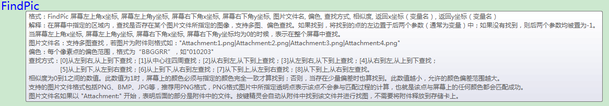
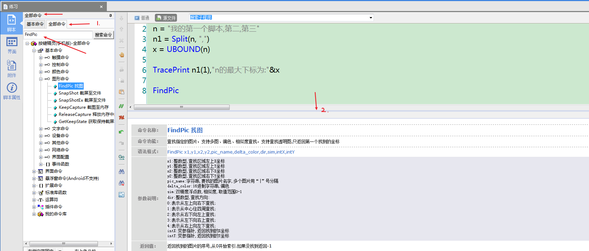
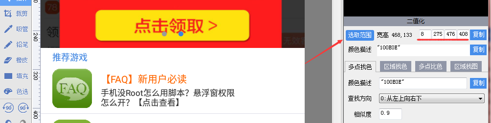

0%
26-电脑软件
27-正则表达式
27-AJax
29-aos.js
1.使用aos要初始化；
30-计算机基础
30-英语单词
32-按键精灵脚本
1. 基础命令
1.视频：https://www.bilibili.com/video/BV1Z5411h7zq?p=4
1.1 短暂点击命令
tap x，y；
- tap
英 [tæp] 美 [tæp]
v.轻敲;轻拍;轻叩;(用…)轻轻叩击;利用，开发，发掘(已有的资源、知识等)
n.水龙头;旋塞;龙头;轻击;轻拍;轻敲;轻扣
1.步骤：
1.1 点击抓抓
1.2 点击截屏
1.3 找到位置，右键鼠标加入点；不加入点也能看到x与y坐标；
emmm，这里还是看视频方便点；笔记不方便；
1.2 持续点击
1.语法：Touch 横坐标，纵坐标，持续时间
touch
英 [tʌtʃ] 美 [tʌtʃ]
v.触摸;碰;接触;触及;移动;碰到;打(人);使受伤
n.触觉;触感;触摸;触;碰;触摸时的感觉例如：Touch x,y,time（单位：毫秒）;
Touch 222,333,5000;
2.解释：点击屏幕上的指定位置，并持续按住一段时间（单位：毫秒）再松开。
1.3 滑动
格式：Swipe 点1的x，y；点2的x，y；滑动时间（可选）
解释：模拟手指在屏幕上的滑动操作。从点1滑动到点2，时间通过可选参数“滑动时间”设定；
例如：Swipe 236，11，236，540，5000
1.4 按键
1.语法：KeyPress “”
- Keypress
按键;按键响应;按键交互响应;键盘按下;键盘按键
2.解释：先“按下”再“弹起”键，模拟我们平时的按键操作。
我们在使用键盘的时候有两种操作,一种是”按下”键,一种是”弹起”键,将这两个动作连续进行,就是一个完整的”按键”动作。指定的按键可以是字符串类型,表示某个键的名字,也可以是数值类型,表示某个键的編码。
- 举例：KeyPress “Home” //模拟按下Home键
2. 变量
1.按键精灵的申明变量的语法不同；是用的Dim；
- 这里是全局变量，第一次运行，全局变量就会在内存中存储
- 2.另一种叫：程序集变量，在程序集（难道是函数吗？）被调用的时候才会被分配到内存中存储
1.1 百度出说的是，可能是这家伙的缩写：
- dimension
英 [daɪˈmenʃn] 美 [daɪˈmenʃn]
n.维(构成空间的因素);尺寸;规模;程度;范围;方面;侧面
1.2 这哪来的设置的意思？
1.3 不过VB语法也是用的这个关键词申明的变量；
- 用关键字dim(dimension)的缩写，dim strmy ，这在无形中做了3件事：建立变量的名称、指定了类型、在内存中分配了一块空间，在变量赋值之前,内存中什么也不包含的。
1.4 百度，按键精灵脚本是什么语言：
按键自身是用C++ 写成的。
不过它自己的脚本的写法是类似 VB VBS；
2.语法：Dim 变量名；
例如：
1
2
3Dim n
n="第一个脚本"
TracePrint nemm,没有分号结尾，反正视频里面是这样写的；
视频：https://www.bilibili.com/video/BV1f7411W7h6?p=3 02：12；2020-12-4 16:38:35
trace
英 [treɪs] 美 [treɪs]
v.查出;找到;发现;追踪;追溯;追究;描绘(事物的过程或发展);追述;记述
n.痕迹;遗迹;踪迹;微量;少许;描记图;轨迹;迹线;扫描线
2.1 TracePrint
- 1.解释:将表达式转换为字符串类型后,发往按键精灵手机助手,并在按键精灵手机助手的调试栏显示出来。TracePrint支持一个或多个参数,最多可以到1024个。如果输入多个参数时,它会自动把所有参数串起来,中间用逗号分隔,这些参数支持字符串、数字、null或boo型。
3.也许需要学习VB语言；2020-12-4 17:15:12
2.2 数据类型
1.和JS的数据类型差不多，可能在什么语言，数据类型都差不多；
2.3 数组
1. Split
1.格式：Split(原字符串，分隔符)
2.解释:返回一个数组,数组中的每个元素都是子字符串。由这些子字符串和分隔符构成原字符串。分隔符也是字符串类型。
3.例如：
1 | Dim n,n1 |
2. UBOUND
1.格式: UBound(数组)
- bound
英 [baʊnd] 美 [baʊnd]
adj.一定会;很可能会;受(法律、义务或情况)约束(必须做某事);有义务(做某事);因…受阻(或不能正常工作)
v.跳跃着跑;形成…的边界(或界限)
n.蹦跳;跳跃
bind的过去分词和过去式
2.解释:获取数组的最大下标,即是数组的长度减1
3.例如：
1 | Dim n,n1,x |
好家伙，这不是C语言里面的语法吗？
完了完了，一个都跑不掉，难道要回去学习C与JAVA；
当初在学校的时候也学过，可惜没有笔记，不然现在也不会这样子；
岂可修；2020-12-4 17:36:53
没有好记性，只有烂笔头；烂笔头也不行，不是电子档的笔记，也会找不到。而且不好整理；
也许是习惯了电子文件，但就算好好保管笔记。如果要添加修改，还是电子文件绝对优势；
3. 找图
3.1 FindPic关键词
1.FindPic关键词的信息非常多：

- 不方便看；
2.我们可以在左边的搜索里面，搜索命名。
2.1 然后在下面看；

1. 解析
0.
| 命令名称： | FindPic 找图 |
|---|---|
| 命令功能： | 查找指定的图片，支持多图、偏色、相似度查找，支持查找透明图,只返回第一个找到的坐标 |
| 语法格式： | FindPic x1,y1,x2,y2,pic_name,delta_color,dir,sim,intX,intY |
| 参数说明： | x1:整数型,查找区域左上X坐标 y1:整数型,查找区域左上Y坐标 x2:整数型,查找区域右下X坐标 y2:整数型,查找区域右下Y坐标 pic_name:字符串,要找的图片名字,多个图片用“|”号分隔 delta_color:16进制字符串,偏色 dir:整数型,查找方向: 0:表示从左上向右下查找; 1:表示从中心往四周查找; 2:表示从右下向左上查找; 3:表示从左下向右上查找; 4:表示从右上向左下查找; sim:双精度浮点数,相似度,取值范围0-1 intX:变参指针,返回找到的X坐标 intY:变参指针,返回找到的Y坐标 |
| 返回值： | 返回找到的图片的序号,从0开始索引.如果没找到返回-1 |
1.案例代码：
1 | Dim intX, intY |
备注：
当区域范围均为0时，表示全屏查找颜色
偏色是微调，指对RBG三色分别确定取色范围
相似度是粗调，指对颜色整体做百分比判断
透明图是指当你图片4个角的颜色均相同时，则这张图片中所有这个颜色将被视为透明色，在找图匹配点过程中 忽略这些点的颜色另外，透明图也支持PNG格式图片中的透明点
1.1 FindPic 0, 0, 0, 0, "Attachment:1.png","000000",0, 0.8, intX, intY
1.四个0是什么？是查找范围；具体在哪里？应该是所处的当前屏幕；
1.1 但是，抓屏不能动态。（抓抓-截屏）
2.在抓抓里面可以直接选取范围，并会给出数据：

2.”Attachment:1.png”
2.1
99-Hello World
Welcome to Hexo! This is your very first post. Check documentation for more info. If you get any problems when using Hexo, you can find the answer in troubleshooting or you can ask me on GitHub.